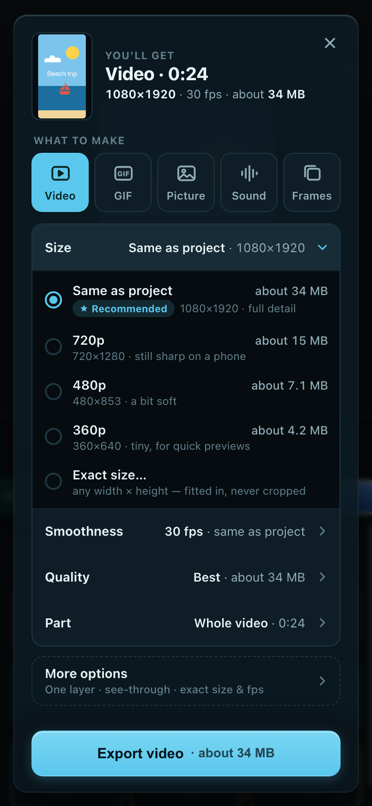
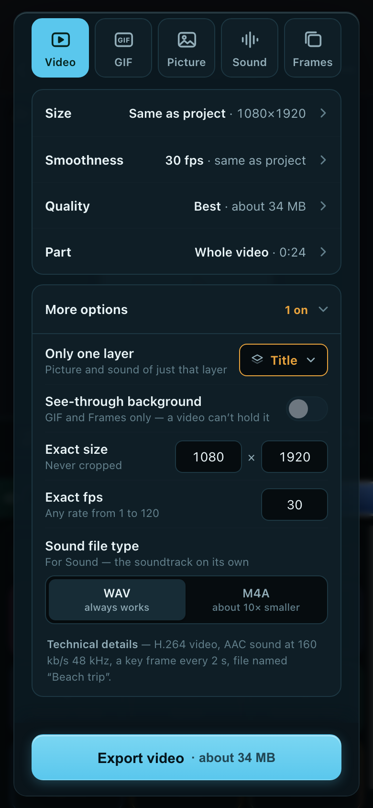
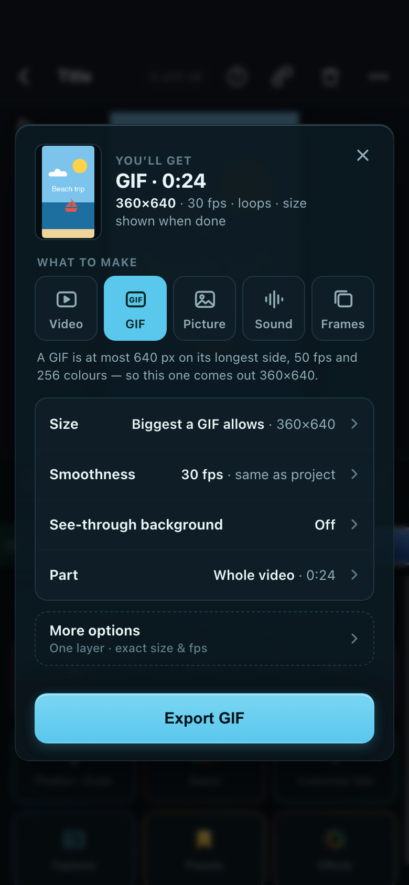
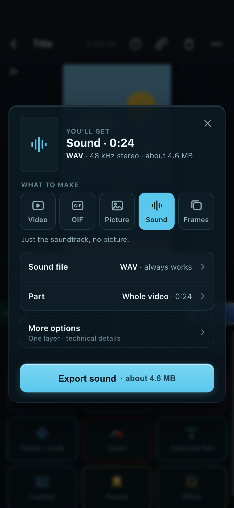
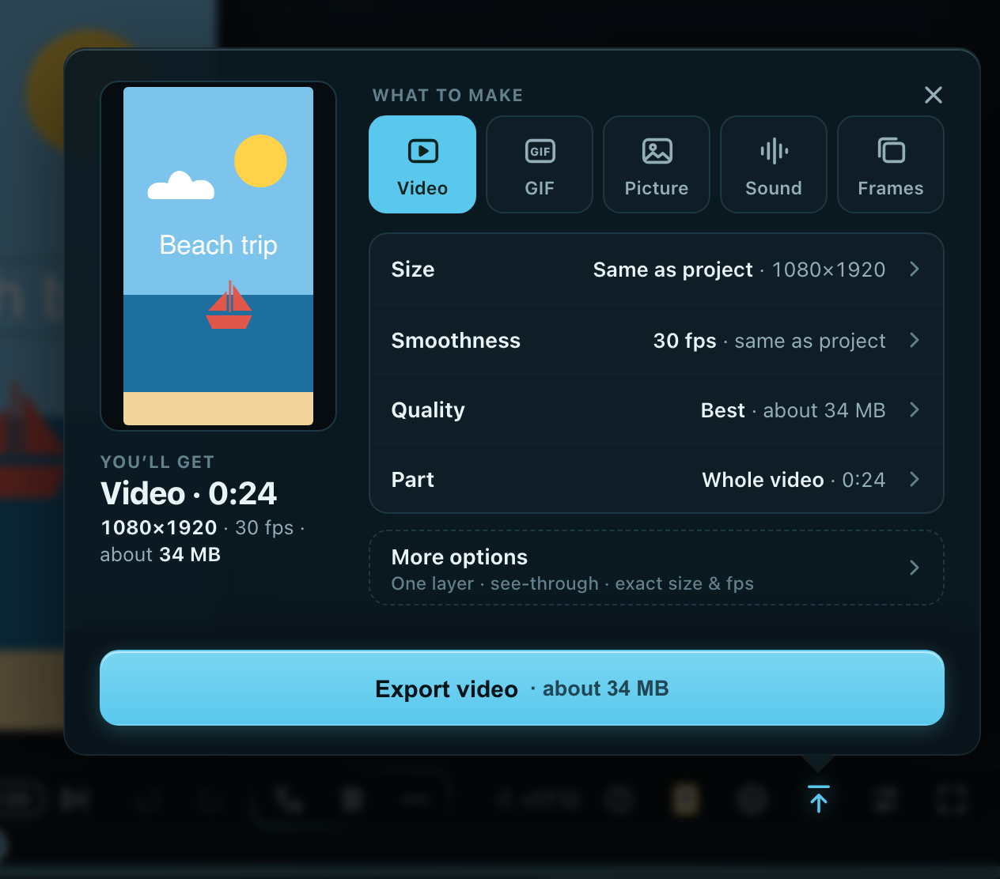
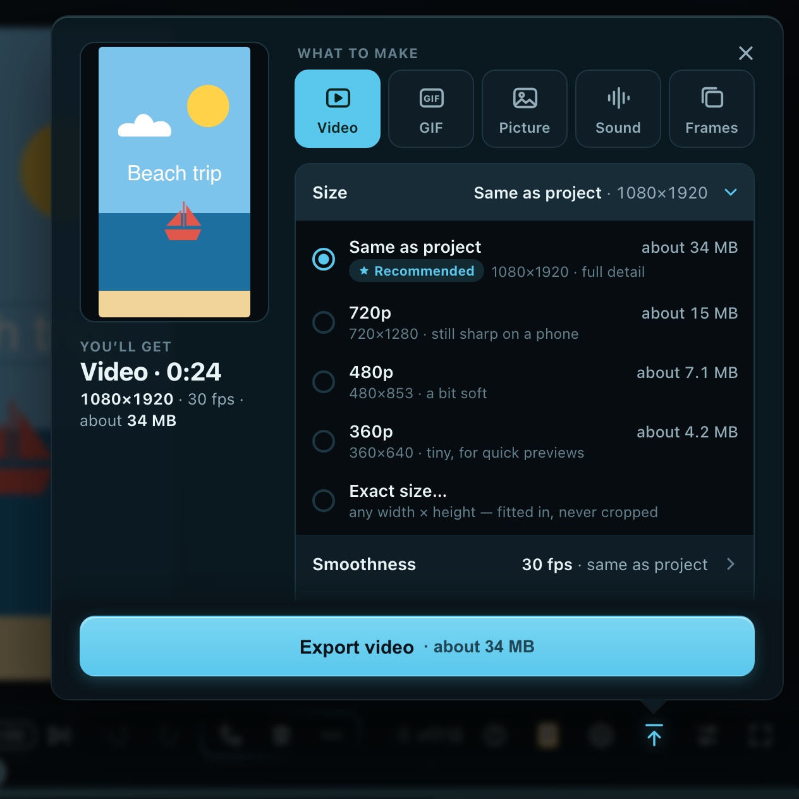
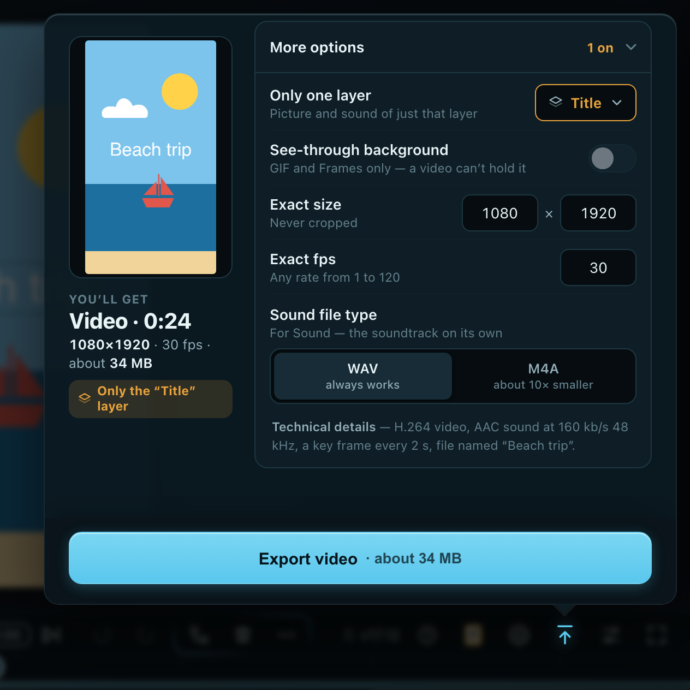

It opens on the answer: a picture, a plain one-line summary and the file size. Five buttons pick what to make. Four rows read like sentences (Size, Smoothness, Quality, Part) and open in place, with Recommended on the default. Everything expert sits in More options, which says “1 on” when anything in it is changed. Opening it and pressing Export still takes no decisions.
Phone · first glance

What you see first: the summary, 5 buttons, 4 rows, More options, one Export.
Phone · Size opened

What you see first: every size with its own MB; Recommended on the default; “Exact size…” last.
Phone · More options opened

What you see first: one layer picked, so it turns amber and More options says “1 on”.
Phone · GIF picked

What you see first: the GIF limit said up front; See-through appears, Quality goes.
Phone · Sound picked

What you see first: no picture rows: just Sound file (WAV / M4A) and Part.
PC 1280×800 · first glance

What you see first: the picture on the left, the choices on the right, all above Export.
PC · Size opened

What you see first: the same list, opened in place; the picture and summary stay put.
PC · More options opened

What you see first: amber “Only the ‘Title’ layer” under the summary: never silent.